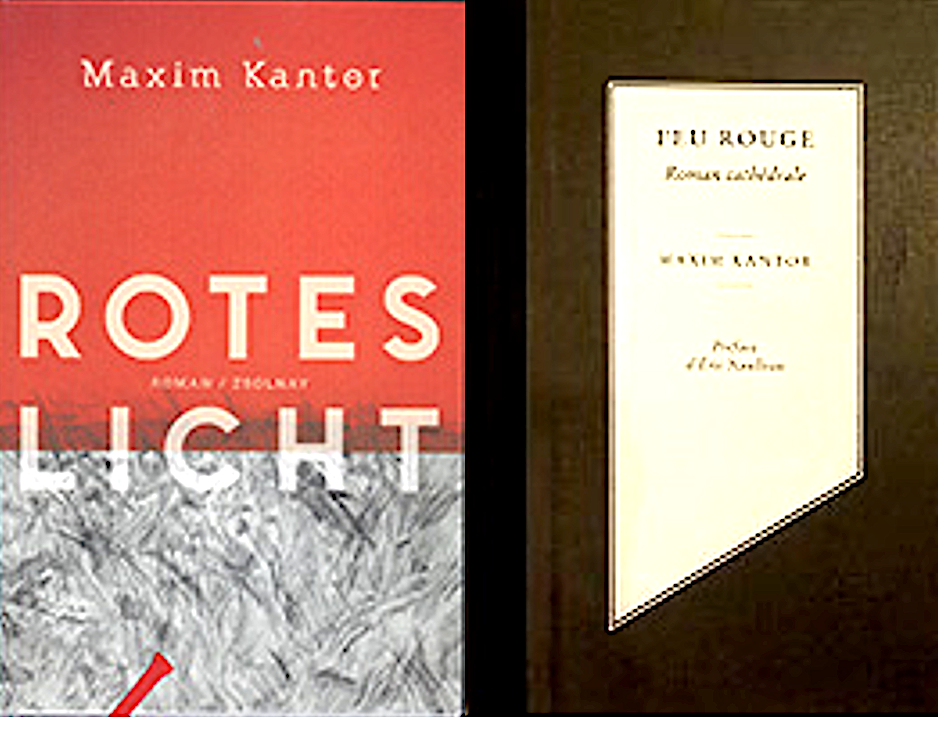

Books
Exhibition books published in conjunction with solo and group exhibitions of Maxim Kantor's work across Europe and beyond.

ODLAND
Exhibition catalogue · Frankfurt, 2001
Exhibition books published in conjunction with solo and group exhibitions of Maxim Kantor's work across Europe and beyond.

ODLAND
Exhibition catalogue · Frankfurt, 2001
THISTLE AND THORN
Philosophy of art
HAZARD (DUTCH EDITION)
Novel · Amsterdam, 2021
ROTES LICHT
Roman · Zsolnay, Wien, 2018
HAZARD (RUSSIAN)
Роман
ROBIN HOOD
Novel
RED LIGHT
Novel · 2013
DUSTPAN AND BROOM
Novel
Lonely Smoker's Advices
Essay
À CONTRE-PIED
Essay
DRAWING TEXT-BOOK
Art education · Moscow / Oxford